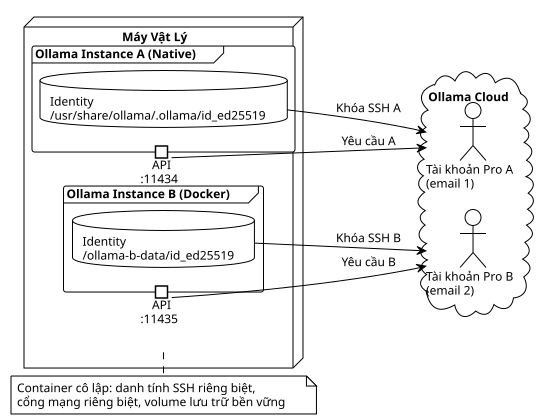

Sử dụng song song hai gói đăng ký Ollama Pro trên cùng một máy với Docker
Đăng ngày 08 May 2026
Hai gói đăng ký Pro, một máy duy nhất, một thẻ ngân hàng duy nhất và không có xung đột mạng. Cách Docker đã cho phép tôi gấp đôi khả năng suy luận cloud mà không cần mua chiếc PC thứ hai.
Giới thiệu
Tôi đã sử dụng Ollama Pro trong vài tháng nay để cung cấp các mô hình cloud cho các phiên OpenCode của mình. Vấn đề là ngay cả với gói đăng ký Pro, chúng ta cũng nhanh chóng bị giới hạn bởi rate limiting khi chạy nhiều agent song song. Giải pháp hiển nhiên là: một gói đăng ký thứ hai.
Nhưng lúc này, bi kịch đã xảy ra.
Ollama định danh mỗi máy bằng một khóa SSH duy nhất — chính là Device Key nổi tiếng của nó. Hai instance trên cùng một hệ điều hành sẽ chia sẻ cùng một danh tính, và không thể liên kết hai tài khoản Pro với cùng một thiết bị. Và như bạn có thể đoán được, tôi sẽ không mua một chiếc laptop thứ hai chỉ vì điều đó.
Giải pháp là: gian lận. Làm cho Ollama tin rằng nó đang chạy trên hai máy khác nhau, trong khi chúng chia sẻ cùng một CPU, cùng RAM và cùng một kết nối mạng. Docker sẽ cung cấp cho chúng ta một bong bóng cô lập hoàn hảo.

Tại sao lại lặp lại cùng một điều hai lần?
Trước khi coi tôi là kẻ điên, hãy để tôi giải thích cho bạn về trường hợp sử dụng này.
Với chỉ một gói đăng ký Pro, tôi có thể chạy một mô hình như`deepseek-v4-pro:cloud`trong một phiên OpenCode. Vấn đề nảy sinh khi tôi muốn có hai phiên đồng thời. Các hạn ngạch giới hạn tốc độ (rate limiting) khiến phiên thứ hai bị chậm hoặc bị từ chối hoàn toàn.
Với hai gói đăng ký Pro độc lập:
-
Phiên OpenCode 1 → Tài khoản Pro A (
localhost:11434) -
Phiên OpenCode 2 → Tài khoản Pro B (
localhost:11435)
Mỗi phiên có hạn ngạch riêng, ngữ cảnh riêng và không gây ảnh hưởng đến phiên khác. Đó là đa xử lý kiểu con người.
|
Hai gói đăng ký Pro = hai email khác nhau. Cùng một thẻ ngân hàng vẫn hoạt động — hệ thống thanh toán của Ollama không chặn các lượt đăng ký nhiều lần từ cùng một phương thức thanh toán. Tôi đã kiểm tra rồi. |
Cốt lõi của vấn đề: Device Key
Khi bạn cài đặt Ollama, một cặp khóa SSH ed25519 sẽ được tạo trong thư mục định danh:
$ cat /usr/share/ollama/.ollama/id_ed25519.pub
ssh-ed25519 AAAAC3NzaC1lZDI1NTE5AAAAI...Khóa này được tải lên các máy chủ của Ollama khi`ollama signin`. Chính nó là thứ nói rằng « máy này thuộc về tài khoản Pro này ». Nếu hai instance của bạn chia sẻ cùng một tệp`id_ed25519`, chúng chia sẻ cùng một danh tính. Kết thúc trò chơi.
Giải pháp: cấp cho instance thứ hai một thư mục định danh riêng, được cô lập trong một Docker volume.
Chuẩn bị (Mise en Place) — Từng bước một
Điều kiện tiên quyết
-
Một bản cài đặt native Ollama hoạt động được (script chính thức`curl | sh`)
-
Docker đã được cài đặt và hoạt động bình thường
-
Portainer hoặc docker-compose để triển khai
-
Hai tài khoản Ollama với hai email riêng biệt
Tôi đã sử dụng phiên bản`0.20.2`— bản được cung cấp bởi script chính thức và image Docker tương ứng.
Bước 1: Tạo Volume
Một thư mục đơn giản trên máy chủ sẽ đóng vai trò là volume bền vững cho danh tính của instance B:
mkdir -p ~/ollama-b-dataThư mục này sẽ được mount vào container Docker như là`/root/.ollama`, nơi Ollama lưu trữ các khóa định danh, lịch sử và các mô hình của nó.
Bước 2: Chạy Container Docker
# docker-compose.yml
services:
ollama-instance-b:
image: ollama/ollama:0.20.2
container_name: ollama-instance-b
ports:
- "11435:11434"
volumes:
- /home/cheroliv/ollama-b-data:/root/.ollama
environment:
- OLLAMA_HOST=0.0.0.0
restart: alwaysĐiều đang xảy ra ở đây:
-
Cổng11435của máy chủ được ánh xạ tới11434nội bộ của container. Vì vậy, instance Docker lắng nghe trên`:11435`không xung đột với thực thể native đang chiếm chỗ`:11434`Vui lòng cung cấp văn bản cần dịch.
-
Âm lượng`~/ollama-b-data`được gắn trên`/root/.ollama`— đó là nơi danh tính SSH sẽ được lưu trữ.
-
`OLLAMA_HOST=0.0.0.0`cho phép container chấp nhận các kết nối bên ngoài.
Tôi đã triển khai stack này thông qua Portainer, nhưng một đơn giản`docker compose up -d`cũng hoạt động tốt tương tự.
Bước 3: Lấy Khóa Công khai
Vì container còn trống trong lần khởi động đầu tiên, Ollama sẽ tự động tạo một cặp khóa SSH mới trong volume. Chúng ta lấy khóa công khai:
$ docker exec ollama-instance-b cat /root/.ollama/id_ed25519.pub
ssh-ed25519 AAAAC3NzaC1lZDI1NTE5AAAAIDDQ+dvnfmuo49q5O8LOlvgZ39SKORFw47ry9k4H2jPcTôi kiểm tra xem khóa này có khác với khóa của instance gốc hay không:
# Instance native
$ cat /usr/share/ollama/.ollama/id_ed25519.pub
ssh-ed25519 AAAAC3NzaC1lZDI1NTE5AAAAIGyF...(différente)
# Instance Docker
$ cat ~/ollama-b-data/id_ed25519.pub
ssh-ed25519 AAAAC3NzaC1lZDI1NTE5AAAAIDDQ...(différente)Hai khóa riêng biệt, hai danh tính tách rời. Vậy là xong.
|
Nếu container của bạn khởi động lại, nó sẽ tái sử dụng các khóa có trong volume. Danh tính được duy trì. Bạn sẽ không làm mất liên kết với tài khoản Pro. |
Bước 4: Lưu Khóa trên Ollama.com
Hướng dẫn https://ollama.com/settings/keys → Add SSH Key. Dán khóa công khai của instance Docker vào và xác nhận.
Tiếp theo, chúng ta liên kết danh tính này với tài khoản Pro B:
$ docker exec -it ollama-instance-b ollama signinTrình duyệt mở ra, chúng ta đăng nhập bằng email của tài khoản B, và token được liên kết với khóa SSH của container. Chúng ta kiểm tra xem mọi thứ đã ổn chưa:
$ docker exec -it ollama-instance-b ollama signin
User: cherolivproBước 5: Thử nghiệm với một Mô hình Nhỏ Miễn phí
Trước khi chi tiền cho gói đăng ký Pro, tôi muốn chắc chắn rằng đường truyền hoạt động tốt. Tôi pull một mô hình nhỏ, miễn phí và chạy cục bộ để kiểm tra kết nối:
$ docker exec ollama-instance-b ollama pull qwen3:0.6b
pulling manifest
pulling 7f4030143c1c: 100% ▕██████████████████▏ 522 MB
success
$ curl -s http://localhost:11435/api/tags
{"models":[{"name":"qwen3:0.6b","model":"qwen3:0.6b",...}]}Cổng`11435`trả lời, mô hình đã được cung cấp. Instance B đang hoạt động.
Khi đã yên tâm, tôi chuyển sang pull mô hình cloud Pro thực sự:
$ docker exec ollama-instance-b ollama pull deepseek-v4-pro:cloud
pulling manifest
pulling 31c3059e137e: 100% ▕██████████████████▏ 344 B
success344 byte cho bản kê khai (manifest) của một mô hình cloud — bình thường, vì quá trình suy luận diễn ra phía máy chủ, không phải tại địa phương. Và đây là bài kiểm tra cuối cùng:
$ curl -s http://localhost:11435/v1/chat/completions \
-H "Content-Type: application/json" \
-d '{"model":"deepseek-v4-pro:cloud","messages":[{"role":"user","content":"Dis bonjour en une phrase courte."}]}'
{
"id": "chatcmpl-480",
"model": "deepseek-v4-pro",
"choices": [{
"message": { "content": "Bonjour !" },
"finish_reason": "stop"
}],
"usage": { "total_tokens": 181 }
}Chào bạn, instance B.
Cạm bẫy của API `/v1/models
Tôi đã mất 20 phút vì một chi tiết ngớ ngẩn. Khi tôi cấu hình provider`ollama-b`trong OpenCode, không có gì xuất hiện trong bộ chọn mô hình. Không một thứ gì. Chẳng có gì cả.
Lý do? API`/v1/models`của instance B trả về`{"object":"list","data":null}`thay vì`{"object":"list","data":[]}`khi chưa có mô hình nào được pull. Giá trị`null`làm treo quá trình parsing phía OpenCode, khiến provider không được hiển thị.
Giải pháp: khai báo các mô hình một cách tường minh trong cấu hình OpenCode thay vì dựa vào việc tự động phát hiện.
{
"$schema": "https://opencode.ai/config.json",
"provider": {
"ollama": {
"npm": "@ai-sdk/openai-compatible",
"name": "Ollama (local)",
"options": { "baseURL": "http://localhost:11434/v1" },
"models": {
"gemma4:e2b": { "name": "Gemma 4 E2B (local)" }
}
},
"ollama-b": {
"npm": "@ai-sdk/openai-compatible",
"name": "Ollama Instance B (Docker)",
"options": { "baseURL": "http://localhost:11435/v1" },
"models": {
"qwen3:0.6b": { "name": "Qwen3 0.6B (B)" },
"deepseek-v4-pro:cloud": { "name": "DeepSeek V4 Pro (B)" }
}
}
}
}Với khai báo rõ ràng này, OpenCode ngay lập tức nhìn thấy provider B và các mô hình của nó. Một lần khởi động lại phiên, và bộ chọn`/models`hiển thị hai instance cạnh nhau.
|
Nếu bạn không nhìn thấy provider custom của mình trong`/models`, đừng lãng phí ba tiếng đồng hồ để khởi động lại terminal của bạn. Hãy khai báo các mẫu thủ công trong`opencode.json`— điều này giải quyết vấn đề ngay lập tức. |
Kết quả: Hai Phiên, Hai Tài khoản, Không Xung đột
Cuối cùng, tôi có thể khởi chạy hai phiên OpenCode đồng thời:
Session 1 → /models → Ollama (local) → deepseek-v4-pro:cloud → Compte A
Session 2 → /models → Ollama Instance B (Docker) → deepseek-v4-pro:cloud → Compte BMỗi phiên có hạn mức riêng, giới hạn tốc độ riêng và không gây ảnh hưởng lẫn nhau. Cùng một máy, cùng một thẻ tín dụng, nhưng hai email khác nhau.
Và điều tuyệt vời nhất là gì? Container Docker đang ở trong`restart: always`Nó tồn tại sau các lần khởi động lại hệ thống mà không cần can thiệp thủ công.
Bài học kinh nghiệm
-
Docker cô lập mọi thứ, kể cả định danh— Chỉ cần một bind mount volume đơn giản là đủ để cấp cho một container bộ khóa SSH riêng, khiến nó trở nên không thể phân biệt được với một máy vật lý khác trong mắt Ollama.
-
Hai email, cùng một thẻ CB— Ollama không chặn các đăng ký nhiều lần từ cùng một phương thức thanh toán. Chỉ có email là phải khác nhau.
-
Dùng thử miễn phí trước khi thanh toán — Un
ollama pull qwen3:0.6b(modèle libre, 522 Mo) permet de valider toute la chaîne réseau sans débourser un centime. Vous validez le plomberie d’abord, vous activez le Pro ensuite. -
/v1/models` với
data: nulllàm hỏng OpenCode— Nếu bạn cấu hình một provider tùy chỉnh với`"models": {}`, OpenCode cố gắng khám phá các mô hình thông qua API. Nếu API trả lời`data: null`, provider không xuất hiện. Hãy khai báo các mô hình một cách tường minh. -
Hai tài khoản, đó là đa xử lý (multi-processing) kiểu con người— Một tài khoản Pro = một phiên OpenCode hoạt động. Hai tài khoản = hai phiên song song. Đối với một người phải xoay xở giữa nhiều dự án Gradle cùng lúc, đây là một bước ngoặt lớn (game changer).
Tìm hiểu thêm
Bài viết được đăng ngày 2026-05-08